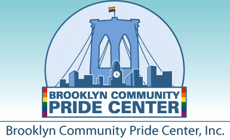
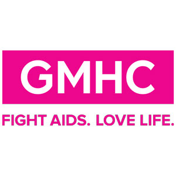
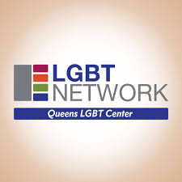
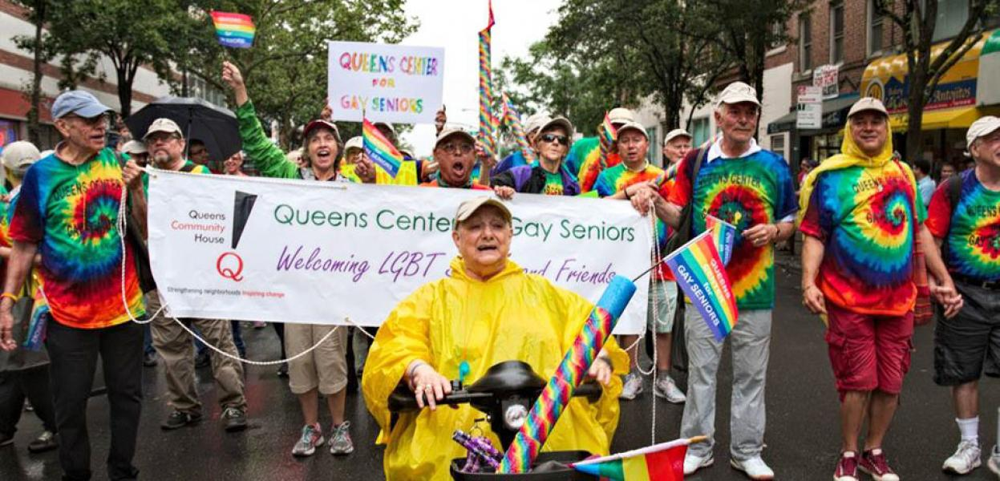
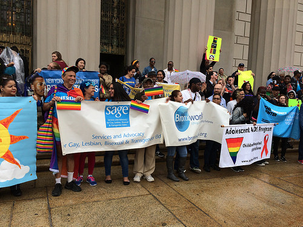
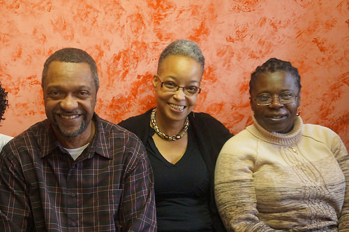
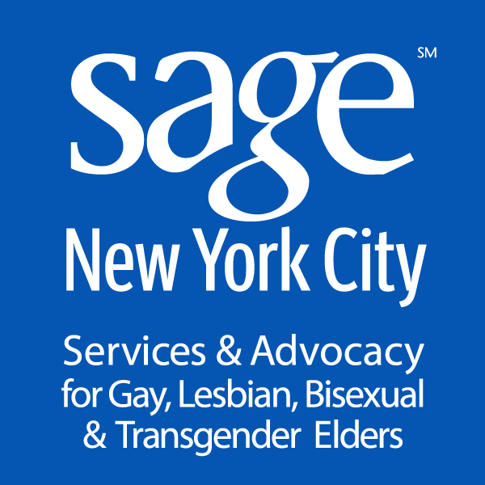
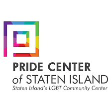
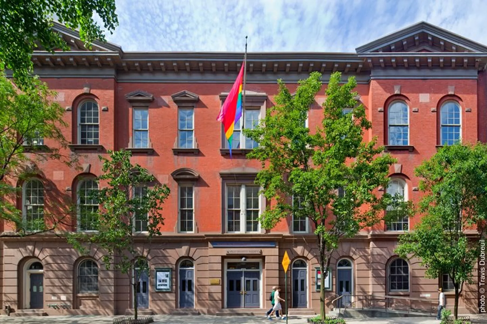

The filter below breaks down services that are available at these centers. Click on a center to learn more.

Services Offered: Basic Computer Classes, HIV Testing, Alcoholics Anonymous, Career Counseling
Brooklyn Community Pride Center
Bedford - Stuyvesant, Brooklyn
1360 Fulton Street, Brooklyn, New YorkServices Offered: Basic Computer Classes, HIV Testing, Alcoholics Anonymous, Career Counseling

Edie Windsor SAGE Center
Midtown, Manhattan
305 Seventh Avenue, 15th Floor, New YorkServices Offered: Basic Computer Classes, Art Classes, Legal Support, Nurse Care, Case Management, Exercise Classes, Dinner Served

Services Offered: Case Management, HIV Testing/PrEP Enrollment, Lunch/Dinner Served, Mental Health Counseling, Career Counseling, Substance Use Counseling, Exercise Classes
Gay Men's Health Crisis
Midtown, Manhattan
446 West 33rd Street, New York, New YorkServices Offered: Case Management, HIV Testing/PrEP Enrollment, Lunch/Dinner Served, Mental Health Counseling, Career Counseling, Substance Use Counseling, Exercise Classes

Services Offered: HIV Testing/PrEP Enrollment, Senior Mingle, LGBT Training for Educators
LGBT Network - Queens
Long Island City, Queens
37-18 Northern Blvd Suite 107 Long Island City, New YorkServices Offered: HIV Testing/PrEP Enrollment, Senior Mingle, LGBT Training for Educators

Services Offered: Exercise Classes, Free Health Screenings, Health Education Workshops, Lunch Served, Language Classes Offered
Queens Center for Gay Seniors
Jackson Heights, Queens
37-06 77th Street, Jackson Heights, New YorkServices Offered: Exercise Classes, Free Health Screenings, Health Education Workshops, Lunch Served, Language Classes Offered

Services Offered: Health and Nutrition Workshops, Exercise classes offered, Case Management, Lunch served, Computer Classes offered
SAGE Center - Bronx
Fordham Heights, Bronx
Union Community Health Center, 260 East 188th Street, Bronx, NYServices Offered: Health and Nutrition Workshops, Exercise classes offered, Case Management, Lunch served, Computer Classes offered

Services Offered: Lunch Served, Art Classes, Improv Acting Classes, Exercise classes offered, Case Management
SAGE - GRIOT
Flatbush, Brooklyn
25 Flatbush Avenue, 5th Floor, Brooklyn, New YorkServices Offered: Lunch Served, Art Classes, Improv Acting Classes, Exercise classes offered, Case Management

Services Offered: HIV Support Groups, Exercise Classes offered, Nurse Care, Case Management, Computer Classes offered, Lunch Served
SAGE Center - Harlem
220 West 143rd Street, New York, New YorkServices Offered: HIV Support Groups, Exercise Classes offered, Nurse Care, Case Management, Computer Classes offered, Lunch Served

Services Offered: 'Ask The Pharmacist' Information Sessions, Food And Nutrition Workshops, Exercise Classes,
SAGE - Pride Center of Staten Island
St. George, Staten Island
25 Victory Boulevard, 3rd Floor, Staten Island, New YorkServices Offered: 'Ask The Pharmacist' Information Sessions, Food And Nutrition Workshops, Exercise Classes,

Services Offered: Free HIV Testing, Substance Use Treatment, Career Development, Mental Health Counseling, Arts & Culture, Recovery Groups
LGBT Community Center - "The Center"
Greenwich Village, Manhattan
208 West 13th Street, New York, New YorkServices Offered: Free HIV Testing, Substance Use Treatment, Career Development, Mental Health Counseling, Arts & Culture, Recovery Groups